ailia LLM 1.5.1 の MTP（Multi-Token Prediction）を使用した、Qualcomm SoC の NPU と CPU における Gemma 4 の測定結果です。
MTP の仕組みと使い方は ailia LLM MTP ガイド、MTP を使わない QNN の測定結果は ailia LLM NPU（QNN）ベンチマーク を参照してください。
Gemma 4 を 2 機種で測定した結果です。Snapdragon 8+ Gen 1（SM8475 / Hexagon v69）は E2B の FP16 モデル、Snapdragon 7s Gen 3（SM7635 / Hexagon v73）は E2B / E4B の Int16 モデルを使用しています。NPU の本体・Assistant は v1.5.1 の MTP 対応モデル（W4）で、QAIRT 2.47、コンテキスト長 8192、AR-256（Prefill）/ AR-4（検証）/ AR-1 構成です。2026-10-12 に測定しました。
CPU は同じ端末上で llama.cpp 経路を使用し、本体は GGUF（E2B は Q4_K_M、E4B は QAT Q4_0）、Assistant は Q4_0 の GGUF です。本体・Assistant・画像 / 音声エンコーダとも、スレッド数 4 で実行しています。QNN ベンチマークは Android の CPU をスレッド数 8 として測定しているため、CPU の値は一致しません。
CPU・NPU とも、「MTP なし」は Assistant を開かずに実行した値、「MTP あり」は同じ本体に Assistant を開いた値（ドラフト長 3）です。各条件は off → on → on → off の順に 2 回ずつ測定し、所要時間の中央値を示します。各試行は新しいインスタンスで実行し、試行間に 20 秒の間隔を置いています。TPS は最初の出力トークンを除いた時間から計算しています。サンプリングは greedy（temperature 0、top-k 1、top-p 1、seed 1234）です。MTP の有無で生成されるトークン列は異なります。
CPU 使用率は、プロセスの CPU 時間を経過時間と 8 コアで割った値で、8 コアすべてを使い切った状態を 100% とします。温度・クロックは固定していません。
81 トークン入力・1,000 トークン生成時のスループットです。受理率は、Assistant が提案した候補のうち本体の検証で採用された割合です。
| 端末 | モデル | CPU（MTP なし） | CPU（MTP あり） | NPU（MTP なし） | NPU（MTP あり） | MTP の効果（CPU / NPU） | 受理率（CPU / NPU） |
|---|---|---|---|---|---|---|---|
| SM8475（Hexagon v69） | E2B / FP16 | 9.189 tokens/s | 8.658 tokens/s | 5.353 tokens/s | 9.675 tokens/s | 0.94 倍 / 1.81 倍 | 31.1% / 33.7% |
| SM7635（Hexagon v73） | E2B / Int16 | 8.423 tokens/s | 11.336 tokens/s | 6.389 tokens/s | 9.898 tokens/s | 1.35 倍 / 1.55 倍 | 31.1% / 35.6% |
| SM7635（Hexagon v73） | E4B / Int16 | 4.217 tokens/s | 6.944 tokens/s | 3.122 tokens/s | 3.164 tokens/s | 1.65 倍 / 1.01 倍 | 37.1% / 39.1% |

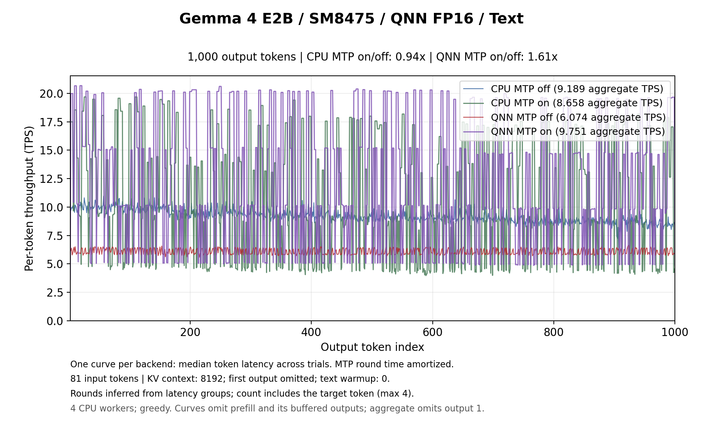

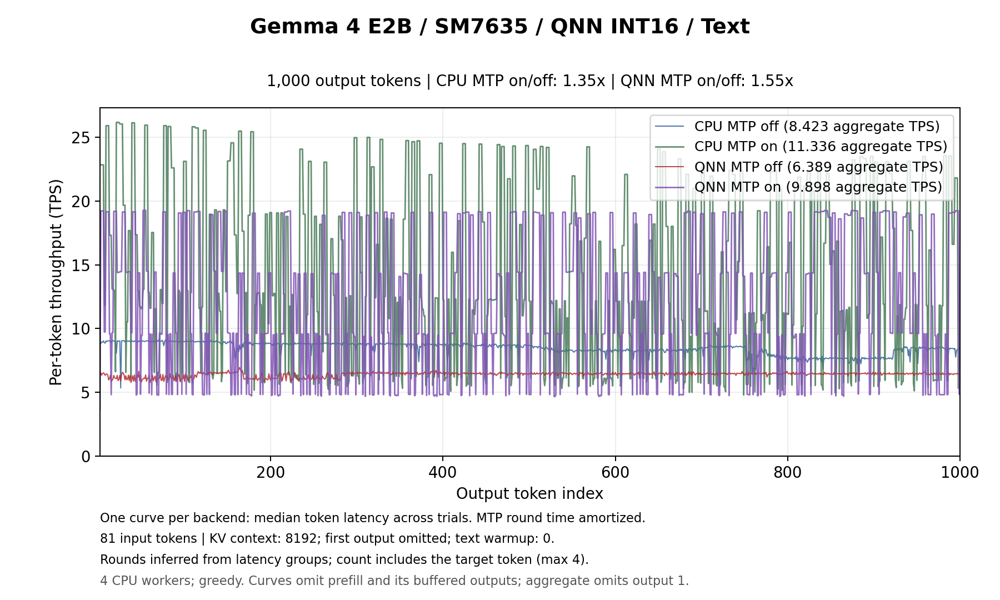

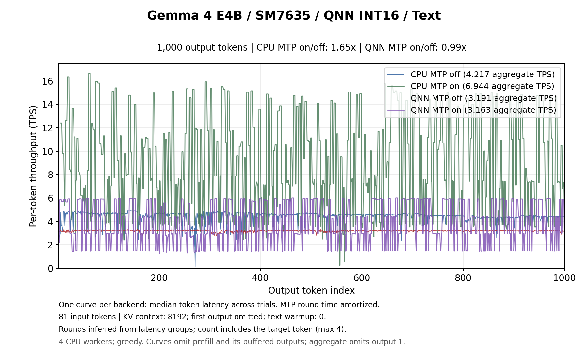
MTP ありのグラフは、本体 1 回の実行（ラウンド）の所要時間を、そのラウンドで確定したトークン数で均等に割り当てて描いています。候補が多く受理されたラウンドでは TPS が高く、すべて外れたラウンドでは低くなるため、値が上下に振れます。凡例の TPS は全体の合計時間から計算した値です。
入力トークン数を 64〜2,048 まで変えたときのスループット（tokens/s）です。各入力長で 2 トークンのウォームアップ後に KV キャッシュを消去し、1 トークンだけ生成しています。
| 端末・モデル・経路 | 64 | 128 | 256 | 512 | 1024 | 2048 |
|---|---|---|---|---|---|---|
| SM8475 E2B CPU（MTP なし） | 35.337 | 33.201 | 32.409 | 31.383 | 29.327 | 27.196 |
| SM8475 E2B CPU（MTP あり） | 31.128 | 31.366 | 31.310 | 30.978 | 29.101 | 27.040 |
| SM8475 E2B NPU（MTP なし） | 69.770 | 136.787 | 265.156 | 287.433 | 283.803 | 281.277 |
| SM8475 E2B NPU（MTP あり） | 71.074 | 136.212 | 266.966 | 287.802 | 283.944 | 282.239 |
| SM7635 E2B CPU（MTP なし） | 57.466 | 54.395 | 51.547 | 47.661 | 37.408 | 33.600 |
| SM7635 E2B CPU（MTP あり） | 50.451 | 49.910 | 49.452 | 46.387 | 34.608 | 31.654 |
| SM7635 E2B NPU（MTP なし） | 33.106 | 65.713 | 130.399 | 130.210 | 129.942 | 128.918 |
| SM7635 E2B NPU（MTP あり） | 33.688 | 67.355 | 133.535 | 133.397 | 131.292 | 130.078 |
| SM7635 E4B CPU（MTP なし） | 34.773 | 35.415 | 38.182 | 36.076 | 29.317 | 27.488 |
| SM7635 E4B CPU（MTP あり） | 33.002 | 34.064 | 32.739 | 32.094 | 29.620 | 26.869 |
| SM7635 E4B NPU（MTP なし） | 20.944 | 40.843 | 81.231 | 83.990 | 81.732 | 81.338 |
| SM7635 E4B NPU（MTP あり） | 20.863 | 40.969 | 81.235 | 84.102 | 79.278 | 83.247 |
実入力トークン数 / 最初の生成呼び出し時間 です。モデルのオープンは含みません。
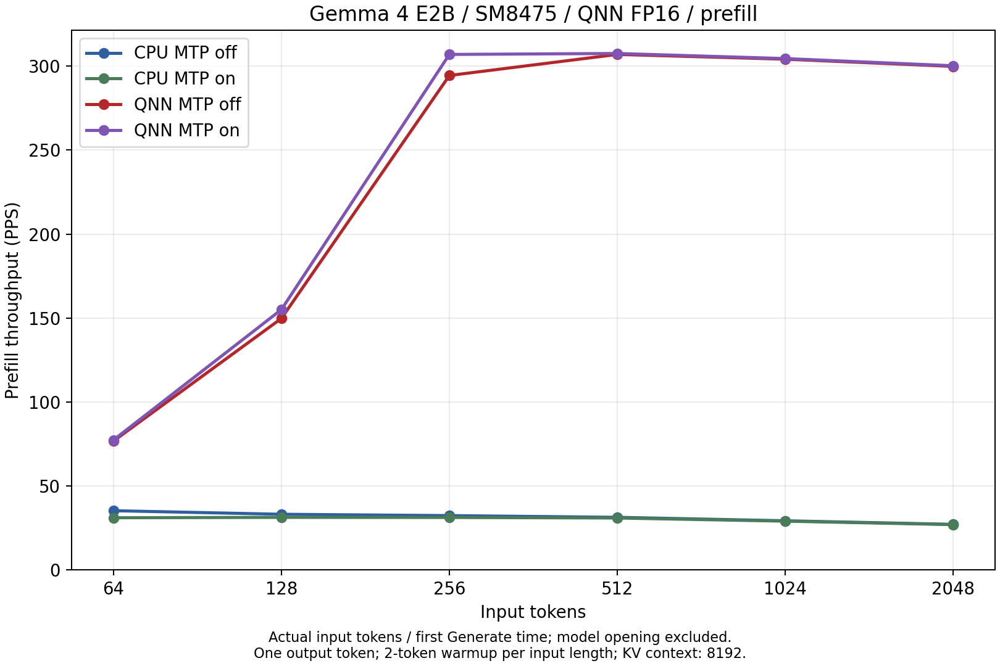

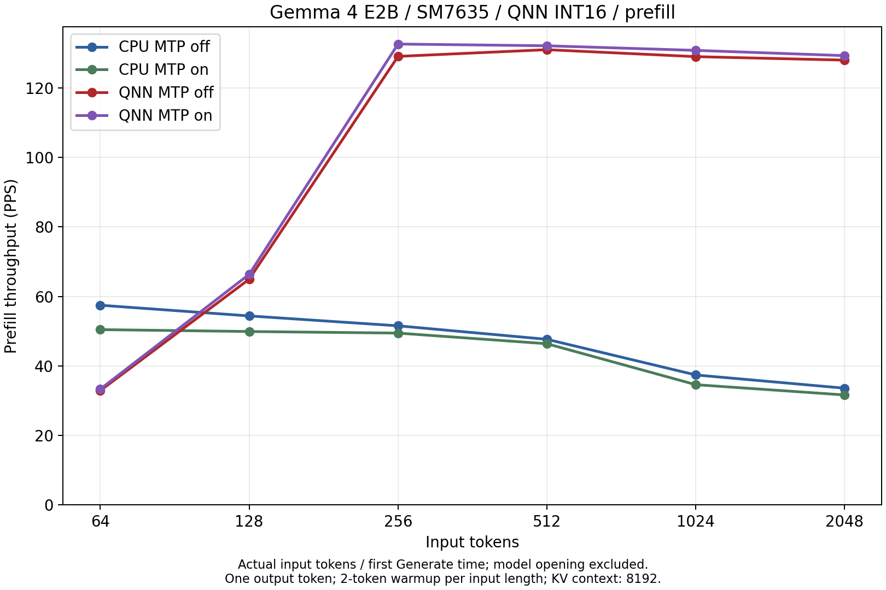

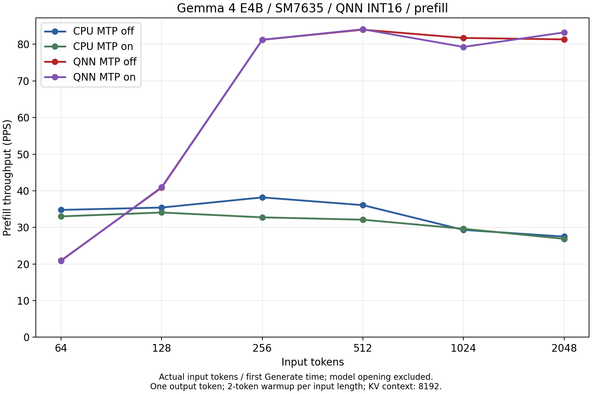
Decode（81 トークン入力・1,000 トークン生成、最初の出力を除く）中のプロセス CPU 使用率です。8 コアすべてを使い切った状態を 100% として表しています。アプリケーションプロセスの使用率であり、端末全体の使用率ではありません。
| 端末・モデル | 入力 | CPU（MTP なし） | CPU（MTP あり） | NPU（MTP なし） | NPU（MTP あり） |
|---|---|---|---|---|---|
| SM8475 E2B | テキスト | 48.9% | 48.3% | 3.2% | 4.0% |
| 画像 | 48.7% | 48.1% | 3.4% | 4.5% | |
| 音声 | 48.6% | 47.3% | 3.1% | 5.0% | |
| SM7635 E2B | テキスト | 49.0% | 48.0% | 2.9% | 4.8% |
| 画像 | 48.7% | 47.7% | 3.1% | 4.8% | |
| 音声 | 48.7% | 47.0% | 2.8% | 4.9% | |
| SM7635 E4B | テキスト | 48.3% | 46.5% | 1.6% | 1.9% |
| 画像 | 48.5% | 46.8% | 1.7% | 2.0% | |
| 音声 | 48.1% | 42.5% | 2.0% | 2.6% |
2,048 トークン Prefill 中は、CPU 実行で 49.5〜49.8%、NPU で 2.4〜4.7% です。画像・音声入力の TTFT（エンコーダを含むプロンプト設定と最初の生成呼び出し）中は、CPU 実行で 44〜49%、NPU で 3.6〜9.4% です。


同一の 768x768 画像 1 枚、100 トークン出力での値です。TTFT は画像エンコーダを含むプロンプト設定と最初の生成呼び出しの合計で、モデルのオープンは含みません。NPU では画像エンコーダも NPU で実行しています。
| 端末・モデル・経路 | TTFT | Decode | 受理率 |
|---|---|---|---|
| SM8475 E2B CPU（MTP なし） | 33.46 秒 | 8.784 tokens/s | — |
| SM8475 E2B CPU（MTP あり） | 34.00 秒 | 7.701 tokens/s | 28.9% |
| SM8475 E2B NPU（MTP なし） | 9.12 秒 | 5.305 tokens/s | — |
| SM8475 E2B NPU（MTP あり） | 8.04 秒 | 9.504 tokens/s | 36.1% |
| SM7635 E2B CPU（MTP なし） | 17.99 秒 | 8.035 tokens/s | — |
| SM7635 E2B CPU（MTP あり） | 17.74 秒 | 11.046 tokens/s | 28.9% |
| SM7635 E2B NPU（MTP なし） | 8.87 秒 | 6.210 tokens/s | — |
| SM7635 E2B NPU（MTP あり） | 7.93 秒 | 9.947 tokens/s | 37.6% |
| SM7635 E4B CPU（MTP なし） | 99.00 秒 | 4.401 tokens/s | — |
| SM7635 E4B CPU（MTP あり） | 103.83 秒 | 6.446 tokens/s | 37.6% |
| SM7635 E4B NPU（MTP なし） | 15.71 秒 | 3.112 tokens/s | — |
| SM7635 E4B NPU（MTP あり） | 14.32 秒 | 2.972 tokens/s | 35.4% |
NPU（MTP あり）の TTFT は、CPU（MTP なし）の SM8475 の E2B で 1/4.2、SM7635 の E2B で 1/2.3、E4B で 1/6.9 です。NPU の Decode は、MTP により SM8475 の E2B で 1.79 倍、SM7635 の E2B で 1.60 倍、E4B で 0.96 倍になりました。
英語音声 1 件の書き起こし、32 トークン出力での値です。TTFT は音声エンコーダを含むプロンプト設定と最初の生成呼び出しの合計で、モデルのオープンは含みません。
| 端末・モデル・経路 | TTFT | Decode | 受理率 |
|---|---|---|---|
| SM8475 E2B CPU（MTP なし） | 21.79 秒 | 9.138 tokens/s | — |
| SM8475 E2B CPU（MTP あり） | 21.65 秒 | 12.712 tokens/s | 80.0% |
| SM8475 E2B NPU（MTP なし） | 6.18 秒 | 5.562 tokens/s | — |
| SM8475 E2B NPU（MTP あり） | 6.38 秒 | 16.197 tokens/s | 100.0% |
| SM7635 E2B CPU（MTP なし） | 14.14 秒 | 7.972 tokens/s | — |
| SM7635 E2B CPU（MTP あり） | 14.10 秒 | 16.313 tokens/s | 80.0% |
| SM7635 E2B NPU（MTP なし） | 7.61 秒 | 6.423 tokens/s | — |
| SM7635 E2B NPU（MTP あり） | 7.53 秒 | 15.992 tokens/s | 92.6% |
| SM7635 E4B CPU（MTP なし） | 52.73 秒 | 4.055 tokens/s | — |
| SM7635 E4B CPU（MTP あり） | 50.40 秒 | 7.507 tokens/s | 100.0% |
| SM7635 E4B NPU（MTP なし） | 12.92 秒 | 3.040 tokens/s | — |
| SM7635 E4B NPU（MTP あり） | 12.97 秒 | 5.037 tokens/s | 100.0% |
NPU（MTP あり）の TTFT は、CPU（MTP なし）の SM8475 の E2B で 1/3.4、SM7635 の E2B で 1/1.9、E4B で 1/4.1 です。NPU の Decode は、MTP により SM8475 の E2B で 2.91 倍、SM7635 の E2B で 2.49 倍、E4B で 1.66 倍になりました。音声の書き起こしは出力が入力音声から一意に決まりやすく、Assistant の候補の受理率が高くなります。単一の音声での測定であり、一般的な速度比ではありません。


temperature 0.8、top-k 40、top-p 0.95、seed 1234 で E2B の NPU を測定した結果です。2026-10-10 に前のランタイムで測定しており、上記の表とは測定時期が異なります。MTP では、本体と Assistant の確率比で候補を受理する Speculative Sampling を使用します。
| 端末・モデル | 入力 | NPU（MTP なし） | NPU（MTP あり） | MTP の効果 | 受理率 |
|---|---|---|---|---|---|
| SM8475 E2B / FP16 | テキスト | 6.931 tokens/s | 9.885 tokens/s | 1.43 倍高速 | 34.8% |
| 画像 | 7.158 tokens/s | 10.113 tokens/s | 1.41 倍高速 | 37.6% | |
| 音声 | 7.146 tokens/s | 17.302 tokens/s | 2.42 倍高速 | 100.0% | |
| SM7635 E2B / Int16 | テキスト | 6.369 tokens/s | 9.617 tokens/s | 1.51 倍高速 | 34.7% |
| 画像 | 6.426 tokens/s | 10.206 tokens/s | 1.59 倍高速 | 40.7% | |
| 音声 | 5.848 tokens/s | 15.372 tokens/s | 2.63 倍高速 | 92.6% |
temperature ありでも greedy とほぼ同じ高速化が得られます。
Snapdragon X Plus（SC8380XP / Hexagon v73、8 コア）の Windows 11 Pro 上で、Gemma 4 E2B / E4B を CPU・GPU・NPU それぞれの MTP なし / あり の 6 構成で測定した結果です。2026-10-13 に測定しました。
CPU は llama.cpp 経路（OpenMP 無効、スレッド数 4）、GPU は Adreno X1-45 で llama.cpp の OpenCL バックエンドを使用し、本体は QAT Q4_0、Assistant は Q4_0 の GGUF です（GPU では Assistant も GPU で実行）。NPU は v1.5.1 の MTP 対応モデル（FP16 / W4）です。画像・音声エンコーダは、CPU・GPU の構成では CPU（BF16 の mmproj GGUF）、NPU の構成では NPU で実行しています。
各構成 1 回の測定で、各試行の前に 60 秒待機しています。コンテキスト長 8192、greedy です。AC 接続、バランス電源プランで、背景アプリが動作している状態での測定です。CPU 使用率は、プロセスの CPU 時間を経過時間と 8 コアで割った値です。QCS6490 向けの MTP モデルはオフラインでのビルド確認のみで、実機での性能評価は未実施です。
81 トークン入力・1,000 トークン生成時のスループットです。括弧内は同じ実行環境での MTP なし比です。
| 構成 | E2B | E2B 受理率 | E4B | E4B 受理率 |
|---|---|---|---|---|
| CPU（MTP なし） | 36.097 tokens/s | — | 20.209 tokens/s | — |
| CPU（MTP あり） | 45.952 tokens/s（1.27 倍） | 31.1% | 34.010 tokens/s（1.68 倍） | 43.3% |
| GPU（MTP なし） | 15.789 tokens/s | — | 8.434 tokens/s | — |
| GPU（MTP あり） | 7.956 tokens/s（0.50 倍） | 39.0% | 4.962 tokens/s（0.59 倍） | 38.2% |
| NPU（MTP なし） | 7.488 tokens/s | — | 4.311 tokens/s | — |
| NPU（MTP あり） | 12.830 tokens/s（1.71 倍） | 35.2% | 7.996 tokens/s（1.85 倍） | 39.4% |
Decode は CPU が最も高速です。GPU は MTP ありで Decode が低下しました。

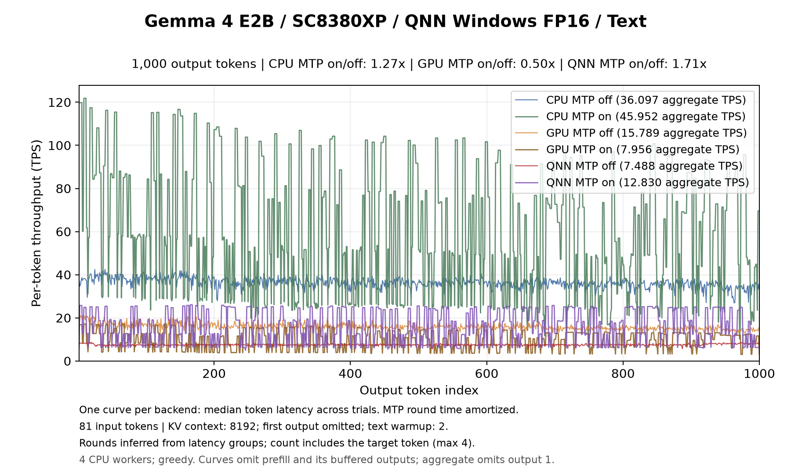

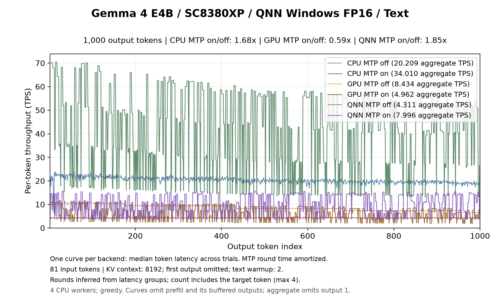
入力トークン数を 64〜2,048 まで変えたときのスループット（tokens/s）です。
| モデル・構成 | 64 | 128 | 256 | 512 | 1024 | 2048 |
|---|---|---|---|---|---|---|
| E2B CPU（MTP なし） | 261.792 | 243.510 | 228.444 | 203.791 | 180.420 | 162.898 |
| E2B CPU（MTP あり） | 226.239 | 209.196 | 212.324 | 198.671 | 179.041 | 159.733 |
| E2B GPU（MTP なし） | 191.567 | 211.200 | 226.293 | 210.324 | 185.268 | 155.789 |
| E2B GPU（MTP あり） | 110.794 | 150.182 | 181.306 | 187.165 | 173.085 | 149.692 |
| E2B NPU（MTP なし） | 111.367 | 218.215 | 427.649 | 429.607 | 416.812 | 417.205 |
| E2B NPU（MTP あり） | 109.650 | 224.799 | 436.772 | 431.751 | 423.681 | 415.362 |
| E4B CPU（MTP なし） | 129.117 | 124.315 | 119.669 | 112.318 | 106.239 | 99.274 |
| E4B CPU（MTP あり） | 114.588 | 115.837 | 117.360 | 112.383 | 104.566 | 97.730 |
| E4B GPU（MTP なし） | 101.494 | 115.771 | 122.735 | 118.920 | 108.919 | 96.327 |
| E4B GPU（MTP あり） | 64.261 | 87.397 | 102.919 | 107.840 | 102.897 | 92.966 |
| E4B NPU（MTP なし） | 63.030 | 127.516 | 244.569 | 254.622 | 249.404 | 248.349 |
| E4B NPU（MTP あり） | 63.413 | 129.878 | 254.998 | 253.348 | 250.169 | 248.072 |
256 トークン以上の入力では NPU が最も高速で、2,048 トークン入力では CPU（MTP なし）の 2.55 倍（E2B）/ 2.50 倍（E4B）です。MTP の有無で NPU の Prefill はほぼ同じです。

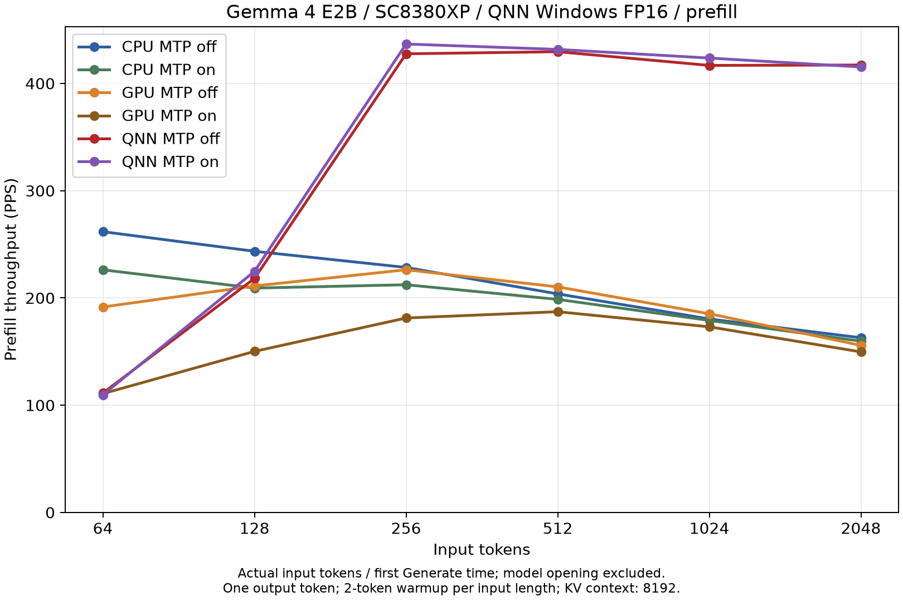

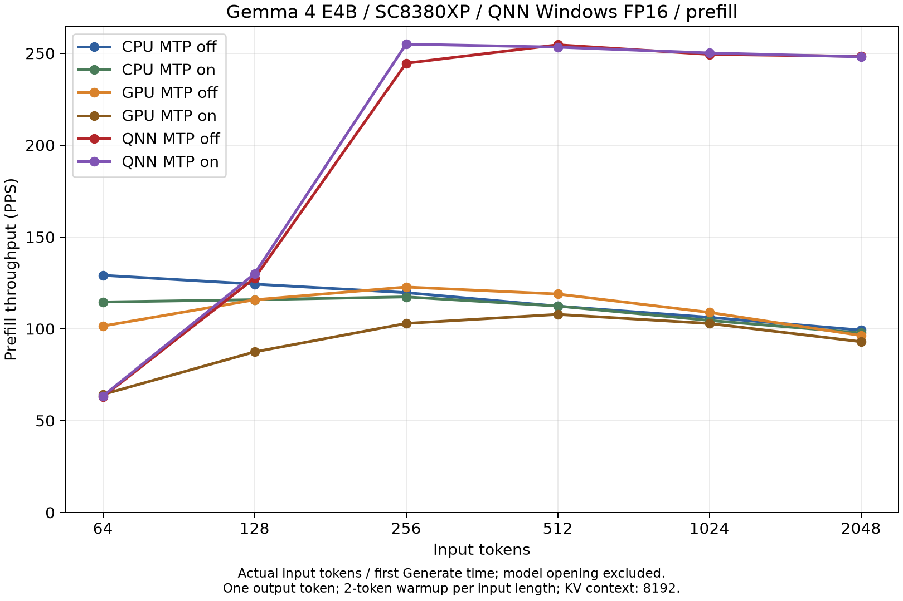
Decode（最初の出力を除く）中のプロセス CPU 使用率です。8 コアすべてを使い切った状態を 100% として表しています。
| モデル | 入力 | CPU（MTP なし） | CPU（MTP あり） | GPU（MTP なし） | GPU（MTP あり） | NPU（MTP なし） | NPU（MTP あり） |
|---|---|---|---|---|---|---|---|
| E2B | テキスト | 48.0% | 46.1% | 6.6% | 1.4% | 2.7% | 4.3% |
| 画像 | 48.5% | 47.7% | 6.2% | 2.8% | 3.0% | 5.1% | |
| 音声 | 49.1% | 46.6% | 7.4% | 1.2% | 2.2% | 6.2% | |
| E4B | テキスト | 48.7% | 48.1% | 4.6% | 2.1% | 1.9% | 3.2% |
| 画像 | 49.0% | 47.9% | 5.4% | 2.6% | 1.9% | 3.7% | |
| 音声 | 48.9% | 46.0% | 5.6% | 2.3% | 2.0% | 3.7% |
64〜2,048 トークン入力の Prefill 中の平均は、CPU で 48.6〜49.8%、GPU で 0.3〜0.9%、NPU で 2.5〜3.3% です。画像・音声入力の TTFT 中は、CPU で 49.3〜49.7%、GPU で 42.8〜48.6%（エンコーダを CPU で実行）、NPU で 4.6〜7.3% です。
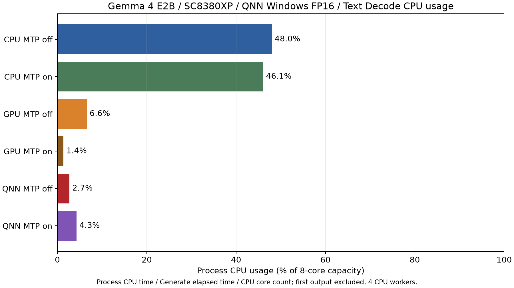
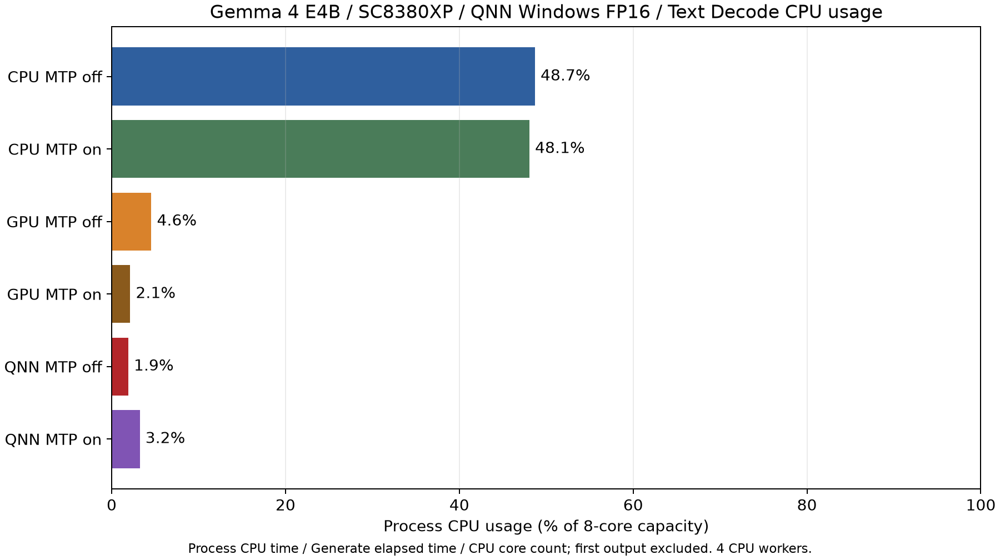
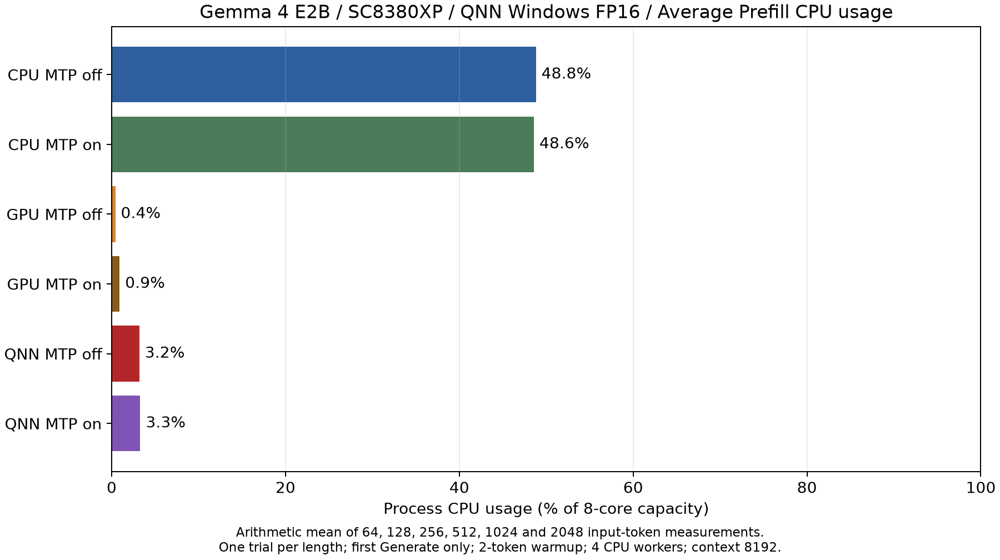
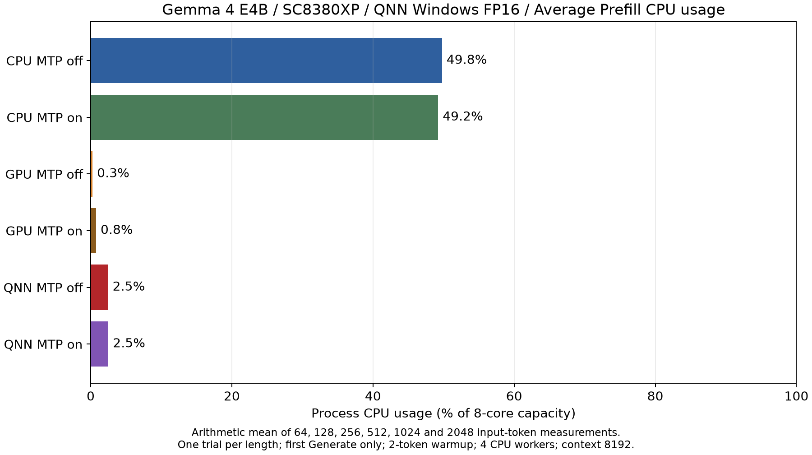
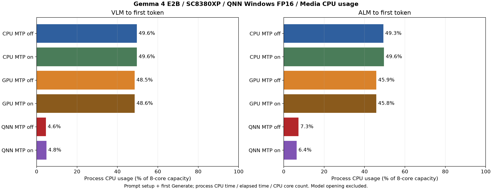
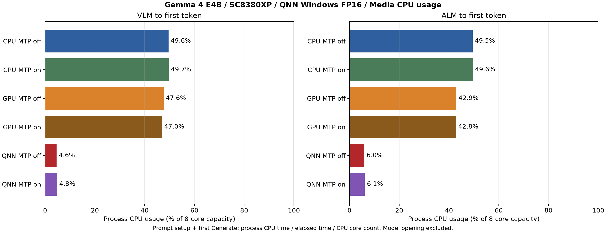
画像は 768x768 の 1 枚で 100 トークン出力、音声は英語音声 1 件の書き起こしで 33 トークン出力です。TTFT はエンコーダを含むプロンプト設定と最初の生成呼び出しの合計で、モデルのオープンは含みません。
| モデル | 入力 | 経路 | TTFT | Decode | 受理率 |
|---|---|---|---|---|---|
| SC8380XP E2B | 画像 | CPU（MTP なし） | 77.44 秒 | 38.097 tokens/s | — |
| SC8380XP E2B | 画像 | CPU（MTP あり） | 77.44 秒 | 61.421 tokens/s | 43.2% |
| SC8380XP E2B | 画像 | GPU（MTP なし） | 77.83 秒 | 17.383 tokens/s | — |
| SC8380XP E2B | 画像 | GPU（MTP あり） | 77.82 秒 | 8.451 tokens/s | 41.7% |
| SC8380XP E2B | 画像 | NPU（MTP なし） | 7.42 秒 | 7.603 tokens/s | — |
| SC8380XP E2B | 画像 | NPU（MTP あり） | 6.79 秒 | 10.305 tokens/s | 32.0% |
| SC8380XP E2B | 音声 | CPU（MTP なし） | 30.93 秒 | 39.247 tokens/s | — |
| SC8380XP E2B | 音声 | CPU（MTP あり） | 30.75 秒 | 103.169 tokens/s | 92.6% |
| SC8380XP E2B | 音声 | GPU（MTP なし） | 30.77 秒 | 16.935 tokens/s | — |
| SC8380XP E2B | 音声 | GPU（MTP あり） | 30.80 秒 | 15.584 tokens/s | 92.6% |
| SC8380XP E2B | 音声 | NPU（MTP なし） | 5.03 秒 | 8.088 tokens/s | — |
| SC8380XP E2B | 音声 | NPU（MTP あり） | 5.03 秒 | 16.327 tokens/s | 92.6% |
| SC8380XP E4B | 画像 | CPU（MTP なし） | 79.04 秒 | 21.437 tokens/s | — |
| SC8380XP E4B | 画像 | CPU（MTP あり） | 78.75 秒 | 33.824 tokens/s | 37.6% |
| SC8380XP E4B | 画像 | GPU（MTP なし） | 79.38 秒 | 9.423 tokens/s | — |
| SC8380XP E4B | 画像 | GPU（MTP あり） | 80.72 秒 | 5.596 tokens/s | 41.7% |
| SC8380XP E4B | 画像 | NPU（MTP なし） | 10.69 秒 | 4.337 tokens/s | — |
| SC8380XP E4B | 画像 | NPU（MTP あり） | 9.11 秒 | 7.592 tokens/s | 43.2% |
| SC8380XP E4B | 音声 | CPU（MTP なし） | 33.37 秒 | 21.364 tokens/s | — |
| SC8380XP E4B | 音声 | CPU（MTP あり） | 33.17 秒 | 58.900 tokens/s | 92.6% |
| SC8380XP E4B | 音声 | GPU（MTP なし） | 33.04 秒 | 9.406 tokens/s | — |
| SC8380XP E4B | 音声 | GPU（MTP あり） | 33.07 秒 | 9.795 tokens/s | 92.6% |
| SC8380XP E4B | 音声 | NPU（MTP なし） | 7.78 秒 | 4.219 tokens/s | — |
| SC8380XP E4B | 音声 | NPU（MTP あり） | 7.39 秒 | 11.986 tokens/s | 92.6% |
NPU の TTFT は、CPU（MTP なし）の 1/11.4（E2B・画像）、1/6.1（E2B・音声）、1/8.7（E4B・画像）、1/4.5（E4B・音声）です。NPU の Decode は MTP により、画像入力で 1.36 倍（E2B）/ 1.75 倍（E4B）、音声入力で 2.02 倍 / 2.84 倍になりました。音声は単一の録音での測定であり、一般的な速度比ではありません。